Testing and Formatting Junk HDDs from Akihabara on Linux
I bought four used 3.5-inch HDDs in Akihabara: one 1 TB drive for 1,500 yen and three 500 GB drives for 500 yen each. Junk drives are cheap, but there is no guarantee they work, so before using them I checked their health and formatted them. My plan is to use them later as storage for a Debian-based NAS. In this post, I explain how to check a used HDD on Linux (Arch Linux in my case) and how to format it, including a USB problem I ran into on the way.
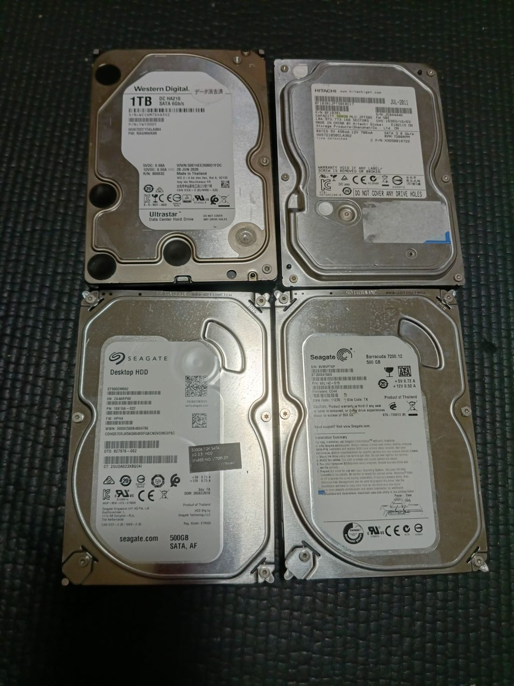
To connect the drives, I bought a USB 3.0 to SATA adapter with an AC power supply on AliExpress for 1,200 yen. Unlike 2.5-inch drives, 3.5-inch HDDs need 12 V to spin up, which USB bus power cannot provide, so an adapter with its own power supply is required. The adapter uses a JMicron JMS578 chip.
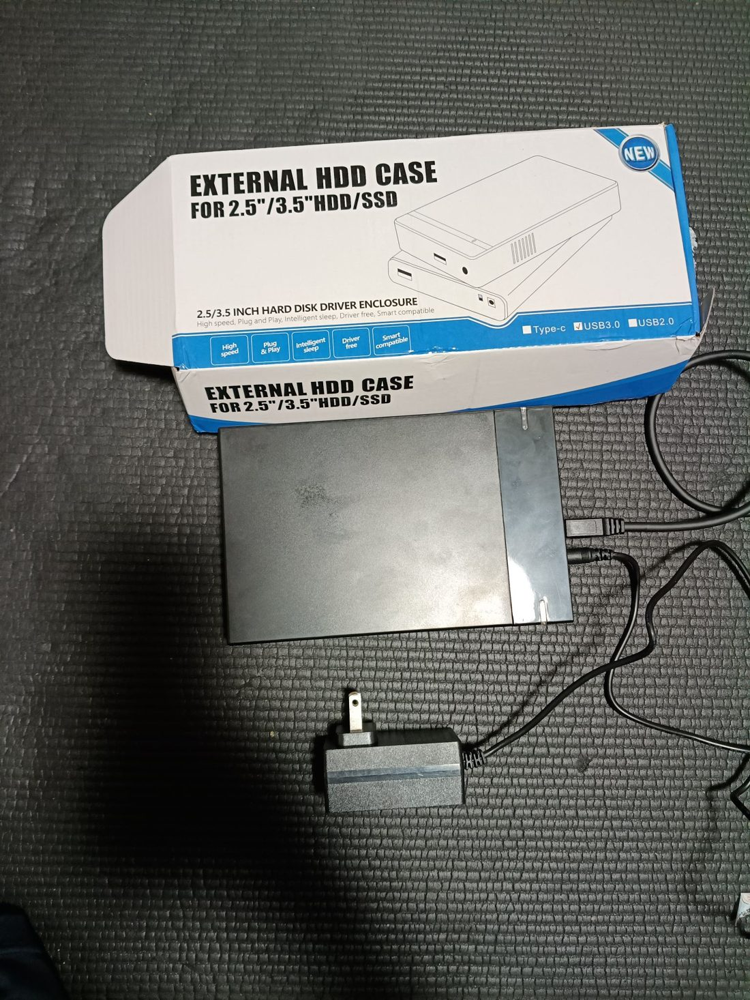
First HDD: HGST Ultrastar 1 TB
This is an HGST (Western Digital) Ultrastar, an enterprise drive designed for data centers. First, identify the device name of the connected drive with lsblk. Use the size and model name to find it.
lsblk -o NAME,SIZE,MODEL,SERIAL,FSTYPE,MOUNTPOINT
NAME SIZE MODEL SERIAL FSTYPE MOUNTPOINT
sda 931.5G HGST HUS722T1TALA604 WCC6M7EDA5V2
zram0 4G swap [SWAP]
nvme0n1 238.5G IM2P33F3 NVMe ADATA 256GB 2K242LAB82NU
├─nvme0n1p1 1G vfat /boot
└─nvme0n1p2 237.5G ext4 /Here, sda is the HDD (nvme0n1 is my system SSD). Next, read the drive’s S.M.A.R.T. data with smartctl (in the smartmontools package: sudo pacman -S smartmontools on Arch ). If the adapter does not pass SMART data through, try adding -d sat.
sudo smartctl -a /dev/sda[sudo] password for gloomydog:
smartctl 7.5 2025-04-30 r5714 [x86_64-linux-7.3.4-arch1-2] (local build)
Copyright (C) 2002-25, Bruce Allen, Christian Franke, www.smartmontools.org
=== START OF INFORMATION SECTION ===
Model Family: Hitachi/HGST Ultrastar 7K2
Device Model: HGST HUS722T1TALA604
Serial Number: WCC6M7EDA5V2
LU WWN Device Id: 5 0014ee 2680d1fdc
Firmware Version: RAGNWA09
User Capacity: 1,000,204,886,016 bytes [1.00 TB]
Sector Size: 512 bytes logical/physical
Rotation Rate: 7200 rpm
Form Factor: 3.5 inches
Device is: In smartctl database 7.5/5706
ATA Version is: ACS-3 T13/2161-D revision 5
SATA Version is: SATA 3.1, 6.0 Gb/s (current: 6.0 Gb/s)
SMART support is: Available - device has SMART capability.
SMART support is: Enabled
=== START OF READ SMART DATA SECTION ===
SMART overall-health self-assessment test result: PASSED
SMART Attributes Data Structure revision number: 16
Vendor Specific SMART Attributes with Thresholds:
ID# ATTRIBUTE_NAME FLAG VALUE WORST THRESH TYPE UPDATED WHEN_FAILED RAW_VALUE
1 Raw_Read_Error_Rate 0x002f 200 200 051 Pre-fail Always - 0
3 Spin_Up_Time 0x0027 151 151 021 Pre-fail Always - 3425
4 Start_Stop_Count 0x0032 100 100 000 Old_age Always - 18
5 Reallocated_Sector_Ct 0x0033 200 200 140 Pre-fail Always - 0
7 Seek_Error_Rate 0x002e 100 200 000 Old_age Always - 0
9 Power_On_Hours 0x0032 040 040 000 Old_age Always - 43878
10 Spin_Retry_Count 0x0032 100 253 000 Old_age Always - 0
12 Power_Cycle_Count 0x0032 100 100 000 Old_age Always - 18
192 Power-Off_Retract_Count 0x0032 200 200 000 Old_age Always - 11
193 Load_Cycle_Count 0x0032 200 200 000 Old_age Always - 10
194 Temperature_Celsius 0x0022 124 089 000 Old_age Always - 19
196 Reallocated_Event_Count 0x0032 200 200 000 Old_age Always - 0
197 Current_Pending_Sector 0x0032 200 200 000 Old_age Always - 0
198 Offline_Uncorrectable 0x0030 100 253 000 Old_age Offline - 0
199 UDMA_CRC_Error_Count 0x0032 200 200 000 Old_age Always - 0
SMART Error Log Version: 1
No Errors Logged
SMART Self-test log structure revision number 1
No self-tests have been logged. [To run self-tests, use: smartctl -t]
The above only provides legacy SMART information - try 'smartctl -x' for moreThese are the attributes to look at:
| Attribute | Value | Meaning |
|---|---|---|
| SMART overall-health | PASSED | The drive’s own verdict. Not enough on its own, but FAILED means “do not use”. |
| 5 Reallocated_Sector_Ct | 0 | Bad sectors already replaced by spares |
| 197 Current_Pending_Sector | 0 | Unstable sectors waiting to be reallocated |
| 198 Offline_Uncorrectable | 0 | Sectors that could not be read |
| 199 UDMA_CRC_Error_Count | 0 | Transfer errors, usually caused by the cable or adapter |
| 9 Power_On_Hours | 43,878 | About 5 years of running time |
Attributes 5, 197 and 198 are the most important: anything other than 0 is a sign that the platter is degrading. This drive has no bad sectors and no errors logged. The power-on time of about 5 years is long, but enterprise drives are built for 24/7 operation, so it is acceptable. Interestingly, the power cycle count is only 18, which means it ran almost continuously in a server.
The SMART values only reflect what the drive has experienced so far. To check it actively, run the built-in self-test. The short test checks the main parts of the drive in about 2 minutes.
sudo smartctl -t short /dev/sda # takes about 2 minutes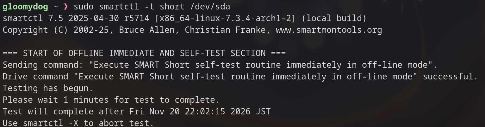
After waiting, show the result:
sudo smartctl -l selftest /dev/sda # show the result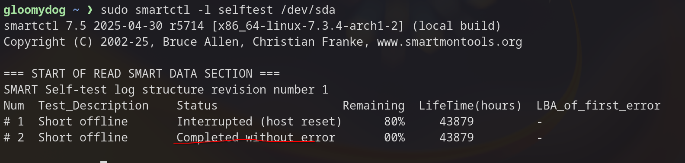
“Completed without error” means the test passed. There is also a long test (smartctl -t long) that reads the whole surface of the disk and can find hidden bad sectors. It takes about 2 hours for this drive, so I skipped it this time, but I recommend it if you plan to store important data.
Formatting
Make sure once more that /dev/sda is the right disk, then create a new GPT partition table and one partition that uses the whole disk. This erases everything on the drive.
lsblk /dev/sda # check againsudo parted /dev/sda mklabel gptsudo parted /dev/sda mkpart primary ext4 0% 100%parted prints “Information: You may need to update /etc/fstab.” This is just a notice and can be ignored.
lsblk /dev/sdaYou can see that the new partition sda1 has been created.
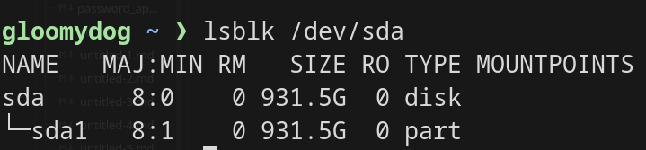
lsblk /dev/sda showing the new sda1 partition.Then create an ext4 file system on it:
sudo mkfs.ext4 /dev/sda1Problem: mkfs never finishes (UAS)
However, I hit a problem here: mkfs stopped at “Creating journal” and never finished. I checked the kernel log:
sudo dmesg | tail -20sd 0:0:0:0: [sda] tag#25 CDB: Write(10) 2a 00 3a 10 fc 00 00 04 00 00
sd 0:0:0:0: [sda] tag#24 uas_eh_abort_handler 0 uas-tag 17 inflight: CMD OUT
sd 0:0:0:0: [sda] tag#24 CDB: Write(10) 2a 00 3a 10 f8 00 00 04 00 00
sd 0:0:0:0: [sda] tag#23 uas_eh_abort_handler 0 uas-tag 16 inflight: CMD OUT
sd 0:0:0:0: [sda] tag#23 CDB: Write(10) 2a 00 3a 10 f4 00 00 04 00 00
sd 0:0:0:0: [sda] tag#0 uas_eh_abort_handler 0 uas-tag 22 inflight: CMD OUT
sd 0:0:0:0: [sda] tag#0 CDB: Write(10) 2a 00 3a 11 0c 00 00 04 00 00
scsi host0: uas_eh_host_reset_handler start
usb 4-1: reset SuperSpeed USB device number 3 using xhci_hcd
scsi host0: uas_eh_host_reset_handler successThe log is full of uas_eh_abort_handler messages followed by a USB reset. Write commands were timing out and the kernel kept resetting the USB connection. This is a known compatibility problem between some USB-SATA bridge chips and UAS (USB Attached SCSI), the faster USB storage protocol that Linux uses by default.
The workaround is to disable UAS for this adapter so that Linux falls back to the older usb-storage driver. It is slightly slower, but stable. First stop mkfs (Ctrl+C, or sudo pkill mkfs.ext4), then find the adapter’s USB ID:
lsusb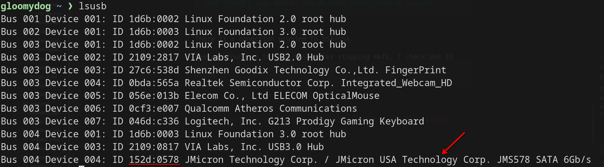
152d:0578).The ID we need is 152d:0578 (JMicron JMS578).
To disable UAS, run the following two commands. The first one makes the setting permanent (it is applied every time the module loads); the second one applies it immediately to the running kernel, so you do not need to reboot. After running them, unplug the adapter and plug it back in.
echo "options usb-storage quirks=152d:0578:u" | sudo tee /etc/modprobe.d/disable-uas.confecho "152d:0578:u" | sudo tee /sys/module/usb_storage/parameters/quirksThen check that the driver has changed from uas to usb-storage:
lsusb -t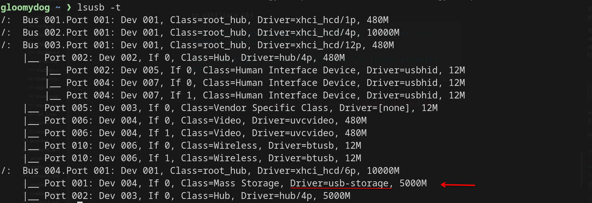
Driver=usb-storage instead of uas.If it still says Driver=uas after a reboot, the module may be loaded from the initramfs. On Arch, regenerate it with sudo mkinitcpio -P and reboot. dmesg should now show “UAS is ignored for this device, using usb-storage instead”.
After that, mkfs finally finished successfully:
sudo mkfs.ext4 /dev/sda1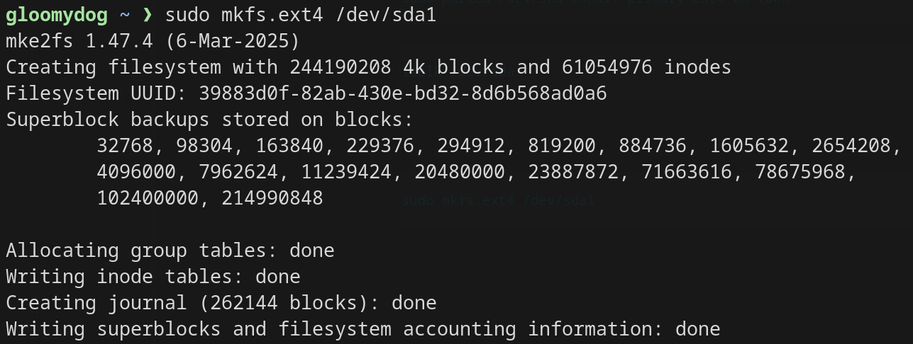
mkfs.ext4 completing successfully after disabling UAS.The new drive now also appears in the file manager.
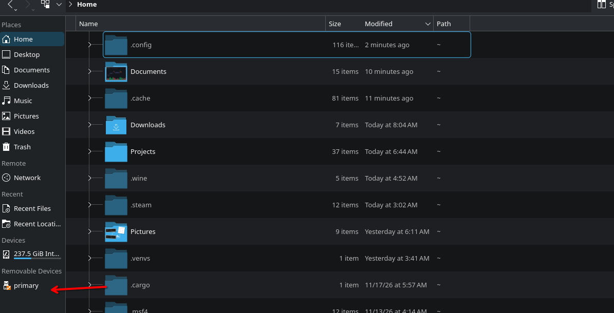
Mounting
Mount it, give your user ownership so you can write without sudo, and check the size:
sudo mount /dev/sda1 /mntsudo chown $USER: /mntdf -h /mnt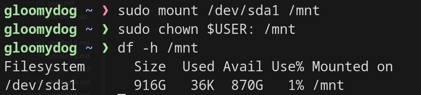
df -h /mnt: 916 GB total, 870 GB available.The 1 TB drive shows up as 916 GB, with 870 GB available. The difference has three causes: 1 TB (1012 bytes) is 931 GiB in binary units; ext4 metadata (inode tables and the journal) takes about 15 GB; and ext4 reserves 5% (about 46 GB) for the root user. For a pure data disk, such as NAS storage, the reserved space is unnecessary and can be released:
sudo tune2fs -m 0 /dev/sda1Before unplugging the drive, always unmount it with sudo umount /mnt.
Second HDD: Hitachi Deskstar 500 GB
Next is a Hitachi Deskstar 7K1000.C (HDS721050CLA362). The adapter is the same, so UAS is already disabled.
sudo smartctl -a /dev/sda
=== START OF INFORMATION SECTION ===
Model Family: Hitachi Deskstar 7K1000.C
Device Model: Hitachi HDS721050CLA362
Serial Number: JP1572JE044A4K
User Capacity: 500,107,862,016 bytes [500 GB]
Rotation Rate: 7200 rpm
Form Factor: 3.5 inches
ATA Version is: ATA8-ACS T13/1699-D revision 4
SATA Version is: SATA 2.6, 3.0 Gb/s
SMART support is: Available - device has SMART capability.
SMART support is: Enabled
=== START OF READ SMART DATA SECTION ===
SMART overall-health self-assessment test result: PASSED
ID# ATTRIBUTE_NAME FLAG VALUE WORST THRESH TYPE UPDATED WHEN_FAILED RAW_VALUE
5 Reallocated_Sector_Ct 0x0033 100 100 005 Pre-fail Always - 0
9 Power_On_Hours 0x0012 098 098 000 Old_age Always - 14406
12 Power_Cycle_Count 0x0032 099 099 000 Old_age Always - 4210
197 Current_Pending_Sector 0x0022 100 100 000 Old_age Always - 0
198 Offline_Uncorrectable 0x0008 100 100 000 Old_age Offline - 0
199 UDMA_CRC_Error_Count 0x000a 200 200 000 Old_age Always - 0
SMART Error Log Version: 0
No Errors Logged
SMART Self-test log structure revision number 1
Num Test_Description Status Remaining LifeTime(hours) LBA_of_first_error
# 1 Short offline Interrupted (host reset) 30% 14406 -
# 2 Short offline Interrupted (host reset) 30% 14406 -
# 3 Short offline Interrupted (host reset) 60% 14406 -
The above only provides legacy SMART information - try 'smartctl -x' for moreThe SMART values look good: PASSED, attributes 5, 197, 198 and 199 are all 0, and no errors are logged. The power-on time is 14,406 hours (about 1.6 years), but the power cycle count is high (4,210), so it was probably used in a desktop PC that was turned on and off every day.
However, the short self-test never finished. The log says “Interrupted (host reset)” with 30–60% remaining, which means the test was cut off before it could check the whole drive. dmesg showed no USB errors this time, only repeated “Synchronizing SCSI cache” messages. My guess is that the USB adapter (or the OS) sends a reset or standby command to the drive during the test. I tried disabling standby with hdparm -S 0, but it did not help. Since the SMART values themselves are clean, I skipped the self-test and moved on to formatting. If you want a real surface check in this situation, sudo badblocks -sv /dev/sda does a read-only scan of the whole disk without relying on the drive’s self-test.
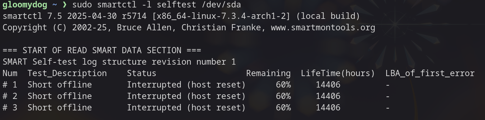
Formatting followed the same steps as the first drive.
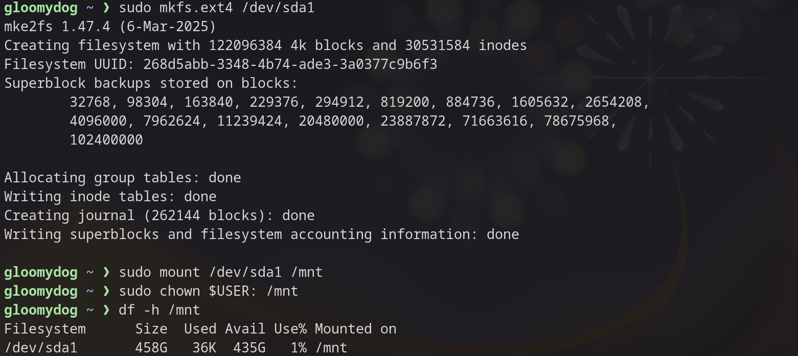
Third HDD: Seagate Barracuda 7200.12 500 GB
sudo smartctl -a /dev/sda
=== START OF INFORMATION SECTION ===
Model Family: Seagate Barracuda 7200.12
Device Model: ST3500418AS
Serial Number: 9VMVPT6P
User Capacity: 500,107,862,016 bytes [500 GB]
Rotation Rate: 7200 rpm
ATA Version is: ATA8-ACS T13/1699-D revision 4
SATA Version is: SATA 2.6, 3.0 Gb/s
==> WARNING: A firmware update for this drive may be available,
see the following Seagate web pages:
http://knowledge.seagate.com/articles/en_US/FAQ/207931en
http://knowledge.seagate.com/articles/en_US/FAQ/213891en
SMART support is: Available - device has SMART capability.
SMART support is: Enabled
=== START OF READ SMART DATA SECTION ===
SMART overall-health self-assessment test result: PASSED
ID# ATTRIBUTE_NAME FLAG VALUE WORST THRESH TYPE UPDATED WHEN_FAILED RAW_VALUE
1 Raw_Read_Error_Rate 0x000f 103 099 006 Pre-fail Always - 6090054
5 Reallocated_Sector_Ct 0x0033 100 100 036 Pre-fail Always - 0
7 Seek_Error_Rate 0x000f 085 060 030 Pre-fail Always - 367007316
9 Power_On_Hours 0x0032 085 085 000 Old_age Always - 13142
189 High_Fly_Writes 0x003a 090 090 000 Old_age Always - 10
195 Hardware_ECC_Recovered 0x001a 037 025 000 Old_age Always - 6090054
197 Current_Pending_Sector 0x0012 100 100 000 Old_age Always - 0
198 Offline_Uncorrectable 0x0010 100 100 000 Old_age Offline - 0
199 UDMA_CRC_Error_Count 0x003e 200 200 000 Old_age Always - 0
SMART Error Log Version: 1
ATA Error Count: 4
Error 4 occurred at disk power-on lifetime: 7552 hours (314 days + 16 hours)
When the command that caused the error occurred, the device was active or idle.
After command completion occurred, registers were:
ER ST SC SN CL CH DH
-- -- -- -- -- -- --
04 71 03 80 01 32 40
(errors 1-3 omitted, all at the same 7552-hour timestamp)
SMART Self-test log structure revision number 1
No self-tests have been logged. [To run self-tests, use: smartctl -t]
The above only provides legacy SMART information - try 'smartctl -x' for moreNote that Seagate drives show huge raw values for Raw_Read_Error_Rate (1), Seek_Error_Rate (7) and Hardware_ECC_Recovered (195). This is normal for Seagate: the raw value is an internal counter, so look at VALUE compared with THRESH instead, which is fine here.
The critical attributes (5, 197, 198, 199) are 0 and the power-on time is 13,142 hours. Two things are a little worrying, though: High_Fly_Writes is 10, and the error log contains 4 ATA errors (“Device Fault”). However, all four happened at 7,552 hours, a long time ago, and nothing has been logged in the 5,500 hours since, so it was probably a one-time event such as a power problem. I will use this drive, but keep an eye on it.
The short self-test was interrupted in the same way as the Hitachi drive.
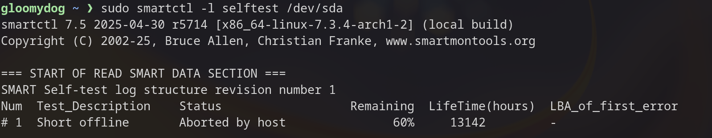
Again, I moved on to formatting.
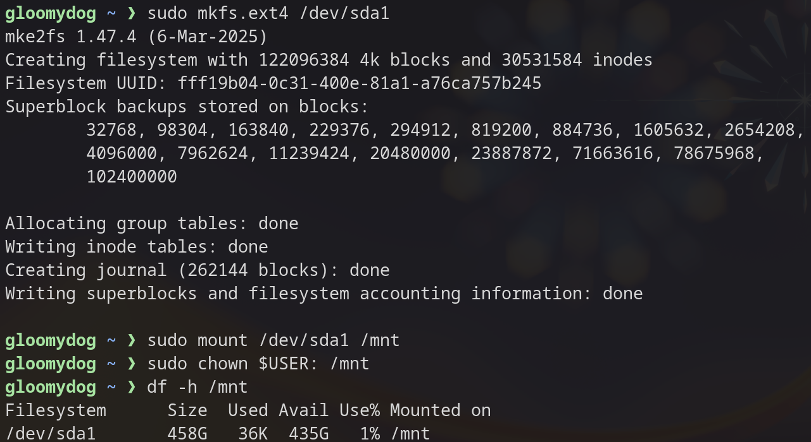
Fourth HDD: Seagate Barracuda 7200.14 500 GB
sudo smartctl -a /dev/sda
=== START OF INFORMATION SECTION ===
Model Family: Seagate Barracuda 7200.14 (AF)
Device Model: ST500DM002-1SB10A
Serial Number: ZA4ARP80
User Capacity: 500,107,862,016 bytes [500 GB]
Sector Sizes: 512 bytes logical, 4096 bytes physical
Rotation Rate: 7200 rpm
Form Factor: 3.5 inches
ATA Version is: ACS-3 T13/2161-D revision 3b
SATA Version is: SATA 3.1, 6.0 Gb/s (current: 6.0 Gb/s)
SMART support is: Available - device has SMART capability.
SMART support is: Enabled
=== START OF READ SMART DATA SECTION ===
SMART overall-health self-assessment test result: PASSED
ID# ATTRIBUTE_NAME FLAG VALUE WORST THRESH TYPE UPDATED WHEN_FAILED RAW_VALUE
5 Reallocated_Sector_Ct 0x0033 100 100 010 Pre-fail Always - 0
9 Power_On_Hours 0x0032 062 062 000 Old_age Always - 33858
12 Power_Cycle_Count 0x0032 095 095 000 Old_age Always - 6006
187 Reported_Uncorrect 0x0032 100 100 000 Old_age Always - 0
197 Current_Pending_Sector 0x0032 100 100 000 Old_age Always - 0
198 Offline_Uncorrectable 0x0030 100 100 000 Old_age Offline - 0
199 UDMA_CRC_Error_Count 0x0032 200 200 000 Old_age Always - 0
SMART Error Log Version: 1
No Errors Logged
SMART Self-test log structure revision number 1
Num Test_Description Status Remaining LifeTime(hours) LBA_of_first_error
# 1 Short offline Completed without error 00% 10453 -
# 2 Short offline Completed without error 00% 10453 -
# 3 Short offline Completed without error 00% 1 -
The above only provides legacy SMART information - try 'smartctl -x' for moreThis drive is also clean in the critical attributes (5, 187, 197, 198, 199 are all 0, no errors logged). Its weak point is age: 33,858 hours of power-on time (about 3.9 years) and over 6,000 power cycles, the most worn of the three 500 GB drives. It is fine for now, but I would not trust it with data that has no backup.
When formatting, mkfs warned that the partition “contains a vfat file system labelled ‘SYSTEM’”. This is a leftover from the previous owner (probably a Windows EFI partition), so I answered y to overwrite it.
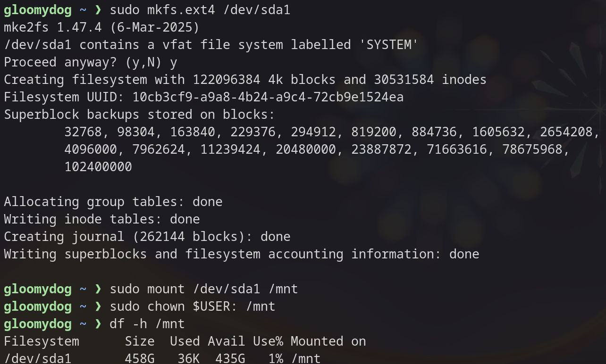
y to overwrite it.Summary
| Drive | Size | Price | Power-on hours | Bad sectors | Notes |
|---|---|---|---|---|---|
| HGST Ultrastar 7K2 | 1 TB | 1,500 yen | 43,878 | 0 | Enterprise drive; short test passed |
| Hitachi Deskstar 7K1000.C | 500 GB | 500 yen | 14,406 | 0 | - |
| Seagate Barracuda 7200.12 | 500 GB | 500 yen | 13,142 | 0 | - |
| Seagate Barracuda 7200.14 | 500 GB | 500 yen | 33,858 | 0 | Most worn; 6,000+ power cycles |
All four junk drives turned out to be usable: 2.5 TB in total for 3,000 yen (plus 1,200 yen for the adapter).